Laufwasserkraftwerk
Anwendungsgebiet: große Flüsse mit relativ gleichmäßigem Wasserfluss.
Typisch: kleine Fallhöhe, dafür großer Durchfluss.
Physik | Klasse 8
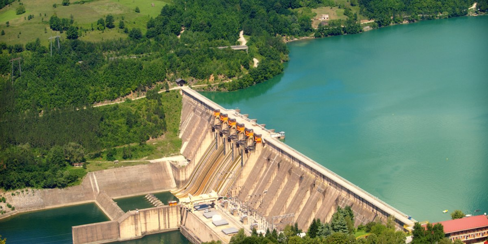
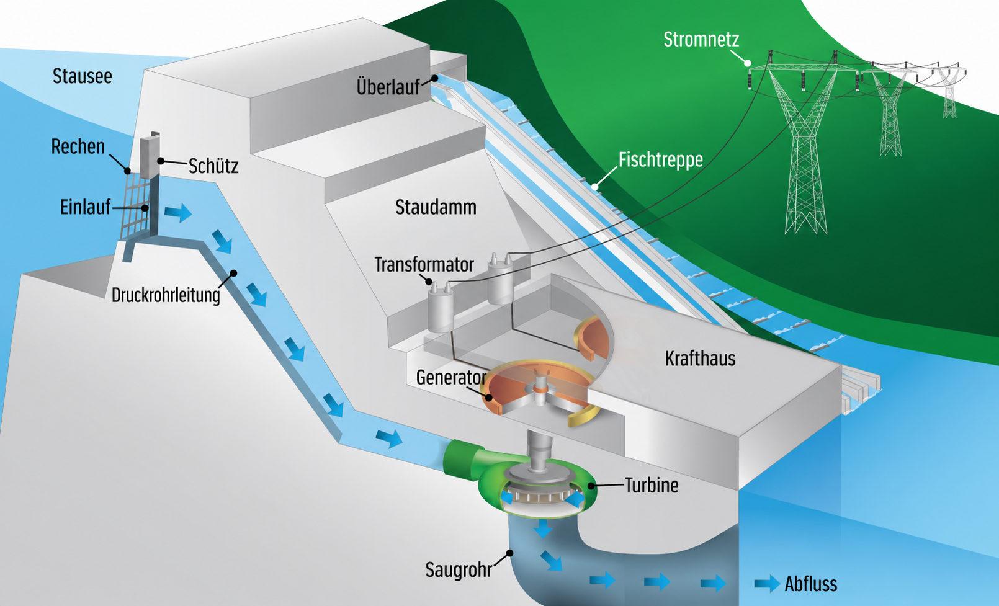
| Turbine | Abbildung | Geeignet für | Anwendungsgebiet |
|---|---|---|---|
| Kaplan | 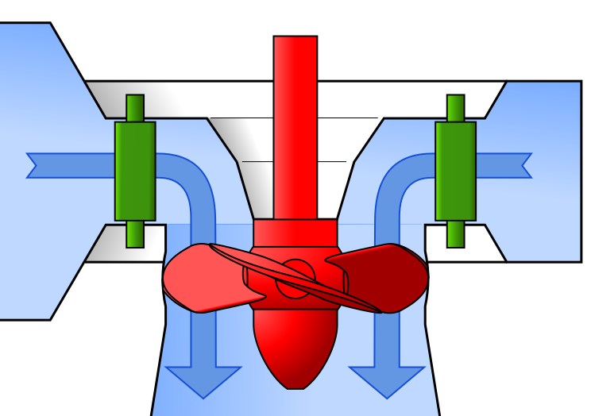 |
kleine Fallhöhe, großer Durchfluss | Flusskraftwerke, Laufwasserkraftwerke |
| Francis | 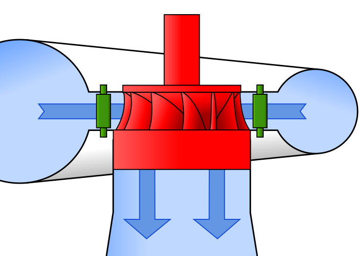 |
mittlere Fallhöhe, mittlerer Durchfluss | viele Speicher- und Laufwasserkraftwerke |
| Pelton | 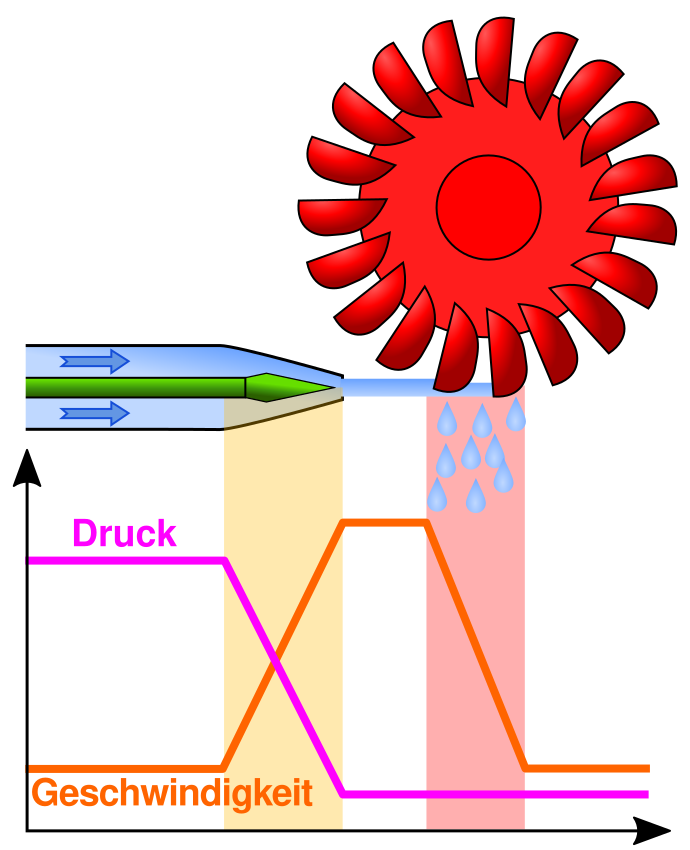 |
große Fallhöhe, kleiner Durchfluss | Hochgebirge, Speicherkraftwerke |
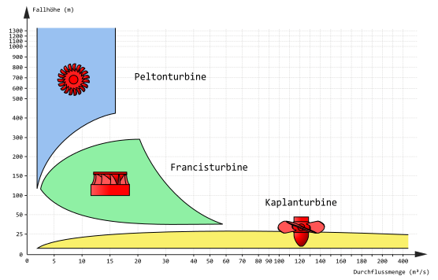
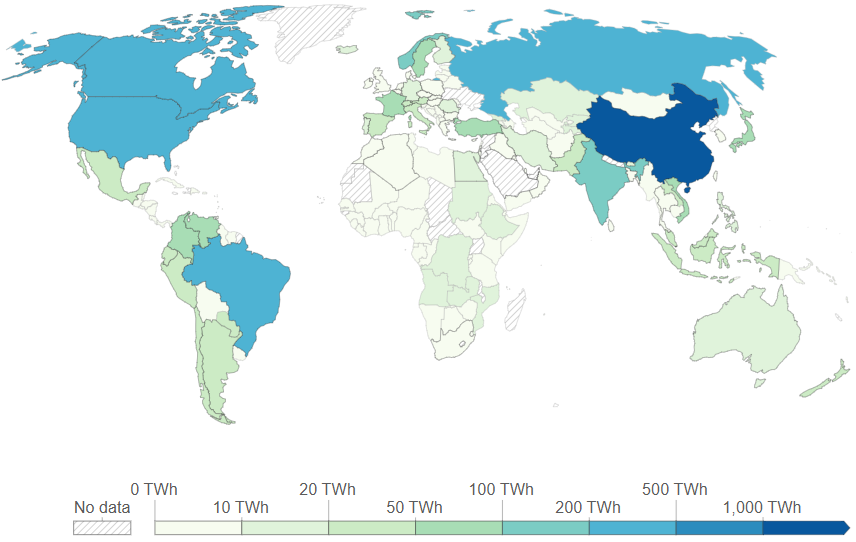
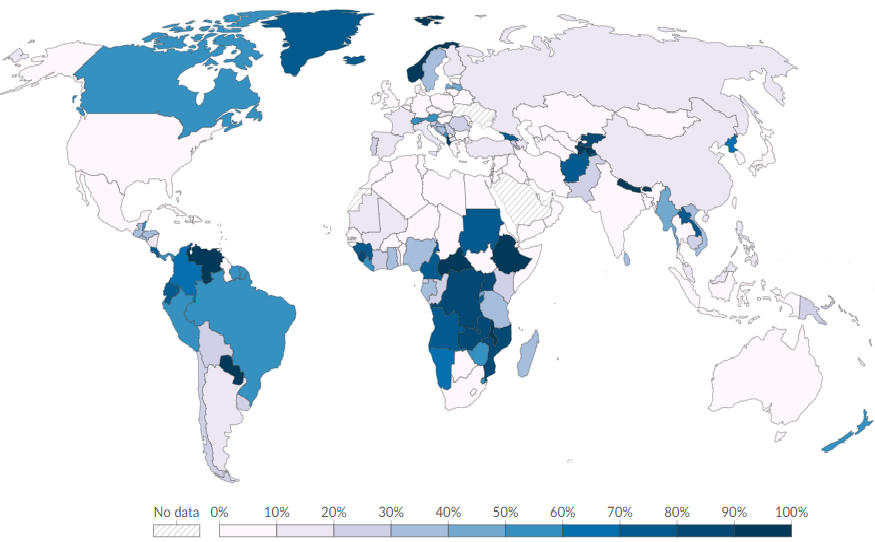
| Kraftwerk | Land | Leistung |
|---|---|---|
| Drei-Schluchten-Damm | China | 22,5 GW |
| Baihetan | China | 16,0 GW |
| Itaipu | Brasilien / Paraguay | 14,0 GW |
| Xiluodu | China | 13,9 GW |
| Belo Monte | Brasilien | 11,2 GW |
| ... | ... | ... |
| Goldisthal (eines der größten Wasserkraftwerke Europas) | Deutschland | 1,1 GW |
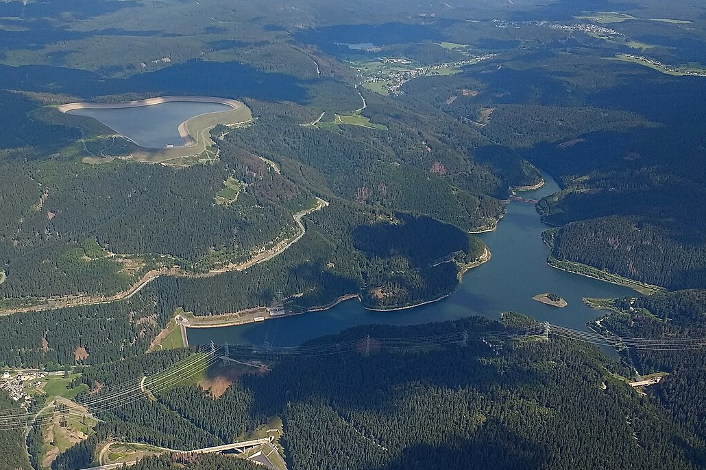
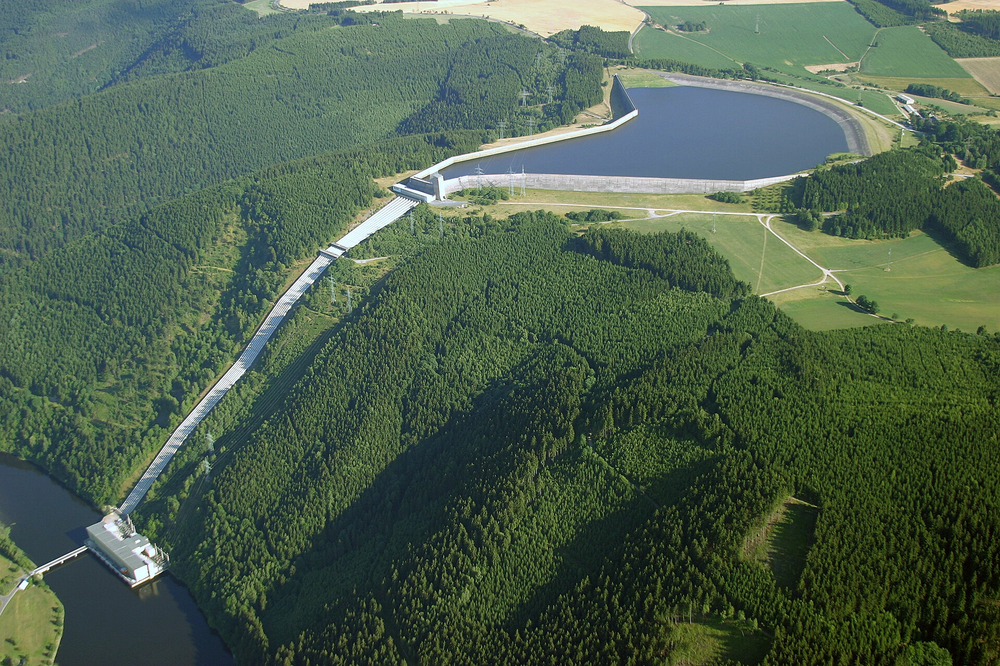
Ein Pumpspeicherkraftwerk hat zwei Becken in unterschiedlicher Höhe. Je nach Bedarf wird Wasser hochgepumpt oder zur Stromerzeugung wieder abgelassen.
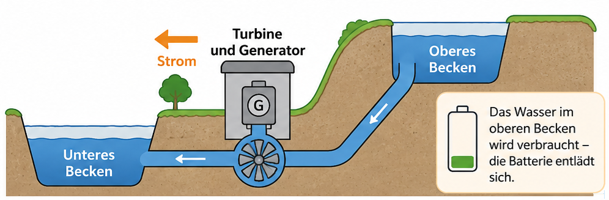
Pumpspeicherkraftwerke speichern Energie in Form von Wasser in der Höhe (potenzielle Energie). Sie helfen, Strom zu speichern und bei Bedarf wieder bereitzustellen. Ihr Wirkungsgrad liegt häufig bei über 95%.
Negative Werte bedeuten: Das Kraftwerk verbraucht Strom zum Pumpen. Positive Werte bedeuten: Das Kraftwerk erzeugt Strom durch Ablassen des Wassers.
Grün: Pumpbetrieb, Wasser wird ins obere Becken gepumpt.
Rot: Turbinenbetrieb, Wasser fließt nach unten und erzeugt Strom.